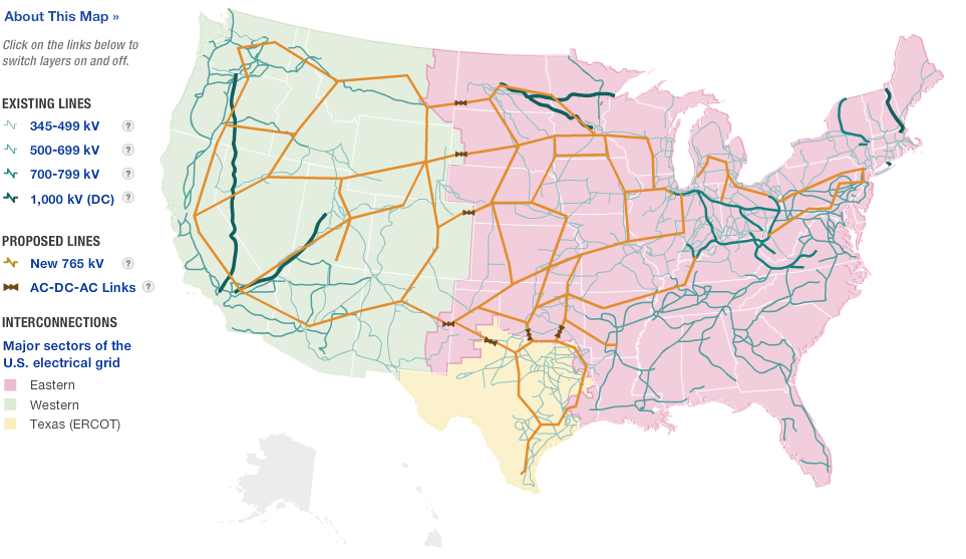
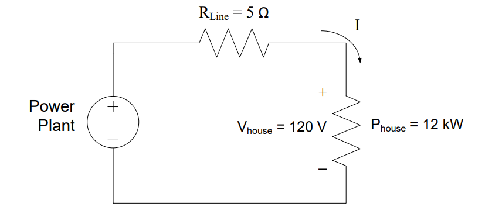
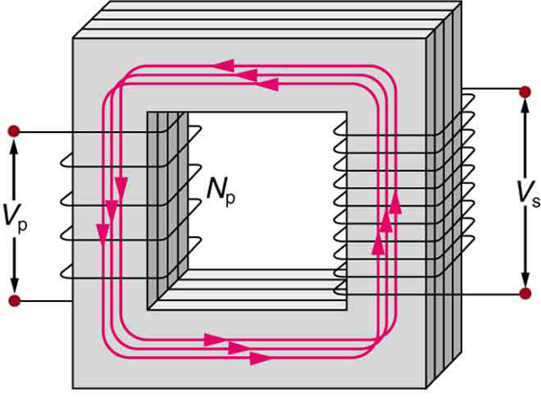
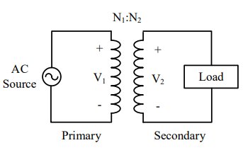
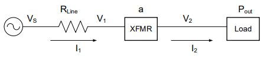
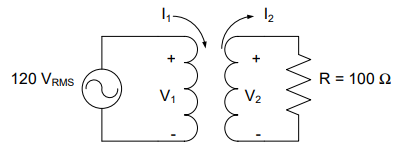
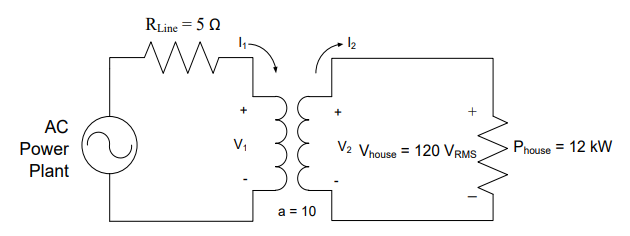
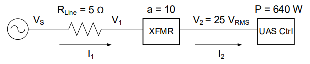
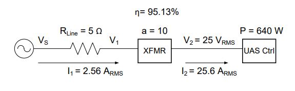
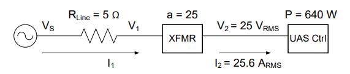

Objective 1.6#
LO# |
Description |
|---|---|
1.6 |
I can use a transformer’s turns ratio, input voltages and currents, and output voltages and currents to calculate the efficiency, source voltage, and current of a power transmission system with one or more transformers. |
Power Transmission#
Towards the end of the 19^th^ century, the first electric companies were developing power transmission systems. At the heart of this difficult engineering problem were losses due to line resistance over long distances. For example, a typical power line has a loss of 250 mΩ/km. When distances are small, we can ignore the relatively small resistance. However, looking at the US national and regional power grid layout in Figure 1, we see that power transmission distances are not usually small.

Figure 1: US national power grid
In most cases, the distance between substations and power generation sites (dam, coal plant, nuclear plant, etc.) is over 20 km, resulting in a line resistance of at least 5 Ω. Consider the efficiency of this scenario, as in Figure 2, where we have a power plant producing DC power then transmitting it across a large distance to a house, which consumes 12kW at 120V.

Figure 2: Model of DC power transmission system
Since we already know how much power is consumed by the house (12 kW), we need to figure out how much power is lost in the 5 Ω transmission line. The best way to solve for this power is to determine the current. Fortunately, the power plant, transmission line, and house are all in series, which means they share the same current. All we need to do, then, is determine the current of either the power plant or the house. Since we are told nothing about the power plant, let’s look at the house. We know both the voltage drop across the house and the power consumed by it. Solving the power equation for the current through the house gives us
Again, since this is a series circuit, the 100 A flows through each device in the circuit. We can use this current to find the power lost in the transmission line:
Therefore, for every 12 kW of power that is used, 50 kW is wasted!
Hopefully, your intuition is already telling you this is not an efficient way to deliver power. We can use the efficiency equation to quantify how bad this option truly is. In order to provide 12kW to the house and cover the loss in the transmission line, the power plant needs to produce:
Which allows us to calculate the efficiency as:
Clearly, this is abysmal, and low efficiencies such as these would increase electricity costs drastically. Fortunately, our power transmission system uses AC power instead of DC power, which allows for much higher efficiencies. The main benefit of AC power is that it allows the use of transformers. Transformers allow the current to be reduced in the transmission line. Reducing the current is a great strategy as the current is typically the largest contributor to power losses.
Transformers#
Ampere’s Law states that an electric current running through a coil of wire will induce a magnetic field. Similarly, Faraday’s Law tells us that a time-varying magnetic field induces a voltage in a wire. So, even though a steady current induces a steady magnetic field, a steady magnetic field does not induce any voltage. To take advantage of the relationship between Ampere’s law and Faraday’s law, a time-varying current can be used to induce a changing magnetic field that in-turn induces a voltage. In fact, transformers rely on this so-called mutual inductance. They are composed of two coils of wires (which are basically inductors) wrapped around a common core, along with insulation to isolate the two circuits.
The physical configuration of a transformer is shown on the left side of Figure 3. The coil of wire on the left side is known as the primary side, while the right side is known as the secondary side. The voltage drop on the primary side is typically denoted by Vp or V1, while the secondary side’s voltage drop is denoted by Vs or V2. Finally, note the ratio N1:N2, which is the turns ratio of the transformer. In this case, N1 is the number of turns in the primary, and N2 the number of turns in the secondary.
 
Figure 3: The physical configuration of a transformer and a transformer shown in a circuit diagram.
In a transformer, the voltage per turn will be equal on both sides. Since each winding is a series arrangement of turns, more turns on the primary leads to a smaller voltage per turn. This happens because the same voltage drop has to occur across more turns. On the secondary, each turn increases the output voltage. This leads us to two interesting points. First, more turns on the primary leads to a smaller voltage drop on the secondary. Second, more turns on the secondary leads to a higher voltage drop on the secondary. We can write this as the equation below.
Typically, this equation is rearranged to the form shown below.
Key Concept
If N2 < N1, then V2 < V1, and the transformer is called a step-down transformer (a > 1).
If N2 > N1, then V2 > V1, and the transformer is called a step-up transformer (a < 1).
The turns ratio is denoted by “a”, and it is the number of turns in the primary divided by the number of turns in the secondary (also the voltage on the primary divided by the voltage on the secondary). The efficiency of transformers is high by default, but advances in technology over the last century allow us to make the assumption of zero loss without sacrificing much rigor. Therefore, by assuming an ideal transformer, power is conserved across the transformer’s primary and secondary sides, meaning input and output power are equivalent:
Since the ratio of V1 to V2 is equal to the turns ratio, we can also use the turns ratio to describe the relationship of the primary and secondary currents:
Sometimes, when we draw transformers, it is more convenient to draw block diagrams:

Figure 4: Block diagram of a transformer with a voltage source and load
In block diagrams, everything is assumed to be in series, unless the input or output of a device has multiple connections. In the example above, the source is providing power through the line, which is then connected to the transformer, with a turns ratio of a. The transformer then transforms the voltage and current and provides power directly to the load. This is a compact, concise way to draw electrical systems, and we will use it frequently as we talk more about how systems behave, rather than how individual circuits behave.
Example Problem 1#
A transformer with 100 turns on the primary and 50 turns on the secondary is used to deliver power from a 120-VRMS source to a 100-Ω load. How much power does the resistor consume? How much power does the source provide?

Understand: We have two circuits here that interact through a transformer. On the left, the voltage source provides power to the primary side of the transformer. At the right, the secondary side of the transformer is effectively a new voltage source that drives the resistor.
Identify Key Information:
Knowns: We know the source voltage, in VRMS, the number of turns on both sides of the transformer, and the resistance of the load.
Unknowns: Power provided from the source, PSource, and power consumed at the resistor, PResistor.
Assumptions: The transformer is an ideal transformer with no power loss.
Plan: Through KVL, we can find V1 and then we can relate the two circuits using the turns ratio information. Finally, we can use Ohm’s law and the power equation to find the power delivered to the load.
Solve: On the primary side of the transformer, applying KVL gives V1 = 120 VRMS. Then, the turns ratio may be used to find V2.
This matches the expectation that for a > 1, the transformer steps-down the voltage when looking left to right.
On the secondary side of the transformer, applying KVL gives VR = 60 VRMS. Using Ohm’s Law:
Which is also I2, so we can now look back to finding I1, the primary side current.
And then compute average power using RMS values:
This correlates with our intuition, as there is no modeled loss in the circuit.
Answer: The source provides 36 W, and the resistor consumes 36 W of average power.
Example Problem 2#
An AC Power Plant is 10 km away from a transformer with a turns ratio of 10 and a house that is using 12 kW of power. The 20 km of electrical wire to and from the transformer has a resistance of 5 Ω (roughly equivalent to a single 20 mm diameter aluminum wire), and the home runs on 120 VRMS. What is the efficiency of the system?

Understand: This system is very similar to the previous problem, except the transmission line from the source to the primary side of the transformer contains some loss (modeled as a 5Ω resistor).
Identify Key Information:
Knowns: Power consumed by the house, the voltage at the house, the turns ratio, and the line resistance
Unknowns: Power produced by the power plant the efficiency, η, of the system
Assumptions: The transformer is an ideal transformer with no power loss.
Plan: Our plan is to use Phouse and Vhouse to find I2, then use the turns ratio to find I1. At that point, we can find PLine. Adding PLine to PHouse (which is the same as P2) will give the total power the power plant must provide, PPowerPlant. Finally, we will find η, which is:
Solve: The power equation for the house, which is modeled as a resistor, gives the current:
Using KCL, we see I2 is equal to Ihouse. Using the turns ratio to determine I1:
The transmission line and the transformer’s primary are in series, so ILine = I1. Since we modelled the transmission line as a resistor, we can use the power equation to solve for the power lost in the transmission line.
The total power produced at the plant is the sum of all power consumed in the system:
Finally, we find the efficiency:
Answer: The efficiency of this power transmission system is 96%.
Look back at the power transmission system in Figure 2. It is the same as the one we just analyzed, with the exception of the transformer and AC power source. By using AC power and a transformer, the efficiency of a power transmission system can be increased from 19.35% to 96%!
Block Diagrams#
For the rest of this lesson, and much of the rest of the class, we will represent circuits as block diagrams. The “XFMR” block will represent a transformer. In later lessons, a block is labeled with the name of the component it is representing.
Example Problem 3#
You are managing a team tasked to create the power supply system for a UAS controller station. The equipment consumes 640 W at a voltage of 25 VRMS. The transmission line is modeled as a 5 Ω resistor. Contractors have submitted Options A and B. Option A uses a transformer with a turns ratio of 10:1, while Option B uses a turns ratio of 25:1. Calculate the efficiency and required generator voltage for both options.

Understand: Here we have a block diagram of a power transmission system, which is nearly exactly the same as the previous problem. The transmission line from the source to the transformer contains loss, modeled as a 5Ω resistor.
Identify Key Information:
Knowns: We know the power consumed by the controller station, the voltage at which that power is provided, the
Unknowns: Efficiency (η) and the required source voltage (VS) for both options.
Assumptions: The transformer is an ideal transformer with no power loss.
Plan: Just as we did with the previous problem, we will find the current to the controller station, then use the turns ratio to find V1 on the primary side of the transformer. Next, we will calculate the power lost in the line and the voltage drop across the line. Finally, we will find the voltage and power of the source, which will allow us to calculate the efficiency of the system.
Solve: Notice first that this is a block diagram as opposed to a circuit. The transformer is depicted as XFMR, which is a common abbreviation. Notice there are only two currents in this system: I1, which flows from the source through the transmission line to the primary side of the transformer, and I2, which flows through the secondary side of the transformer to the UAS controller.
We also know that V2 = 25 VRMS and that the average power consumed by the UAS control station is 640 W.
Let’s start by solving for both currents. Using the power equation:
We can now use the turns ratio to calculate I1:
We can use this current to determine the power lost in the transmission line and the efficiency of the system:
At this point, we can solve for the voltages using the turns ratio:
It is important to realize V1 is the voltage that drops across the primary side of the transformer. It is not the same as the voltage that drops across the power line, nor is it the same as the source voltage. Both of these voltages can be calculated fairly easily, however, using KVL and Ohm’s Law:
Therefore, Option A (with a 10:1 turns ratio) requires a 262.8 VRMS generator and has a 95.13 % efficiency.

Now, let’s do the same analysis for Option B.

Since the power and voltage are the same as the previous option, we know the current is also the same. Therefore,
Using the turns ratio equation,
Solving for the power lost in the transmission line and the efficiency of the system:
Finally, we can solve for VS with VLine and V1
With a turns ratio of 25:1, Option B requires a 630.1 VRMS generator and has a 99.19% efficiency.
Answer: Option A (with a turns ratio of 10:1) requires a 262.8 VRMS generator and has a 95.13% efficiency while Option B (with a turns ratio of 25:1) needs a 630.1 VRMS generator and has a 99.19% efficiency.